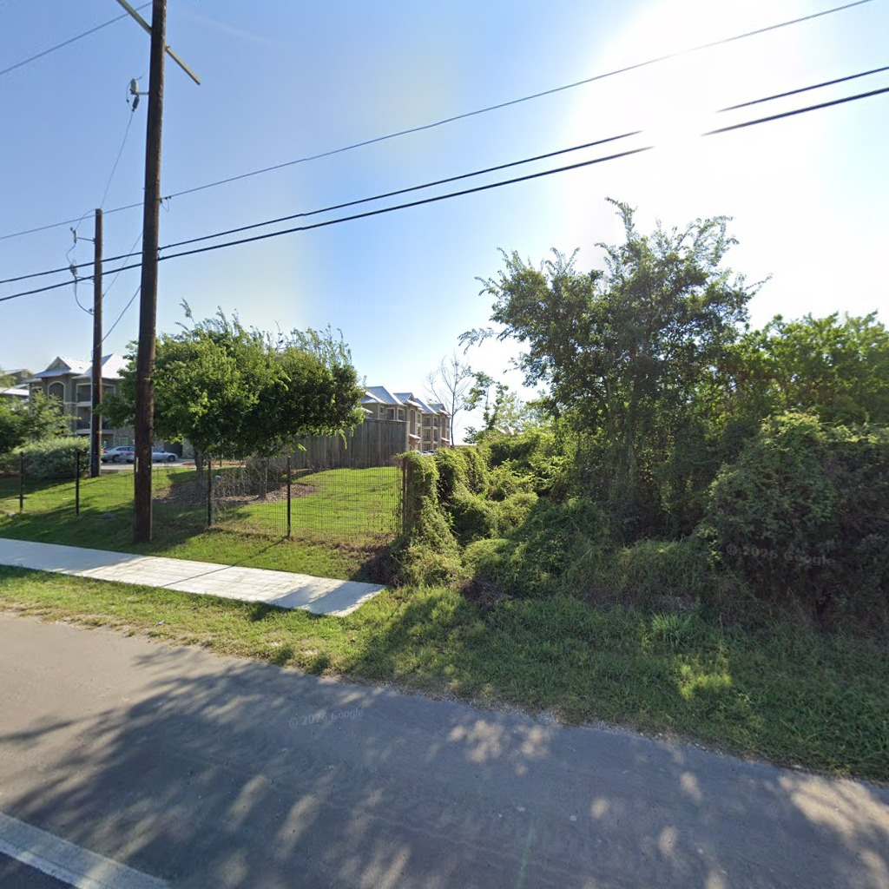
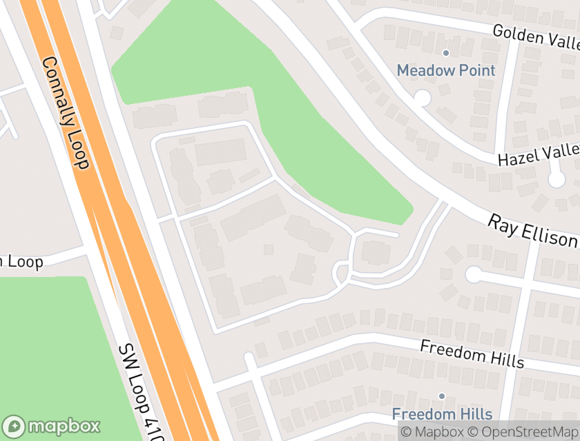
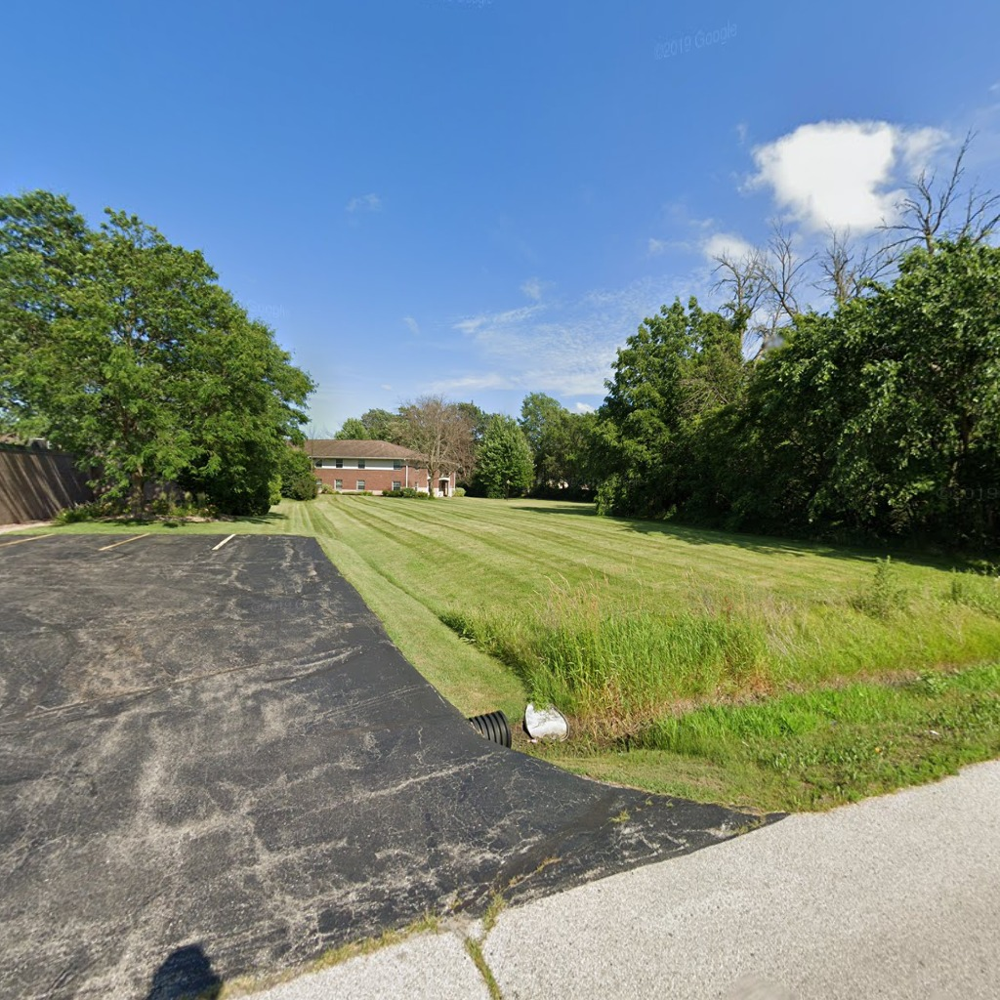
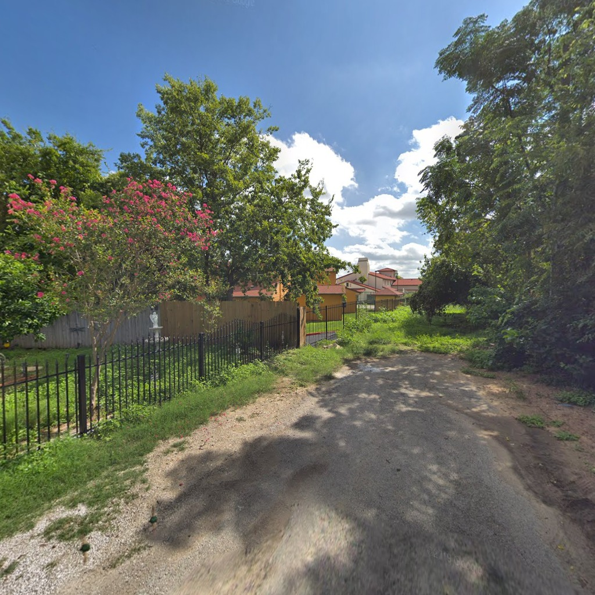
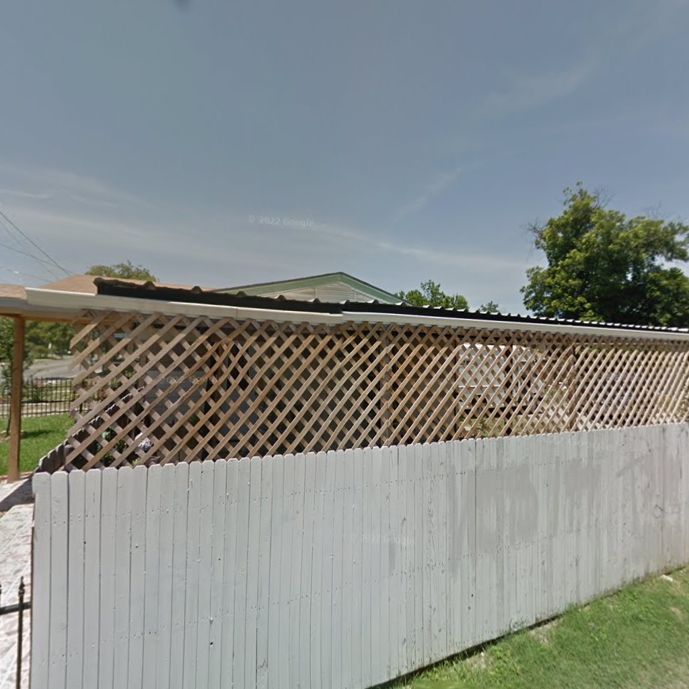
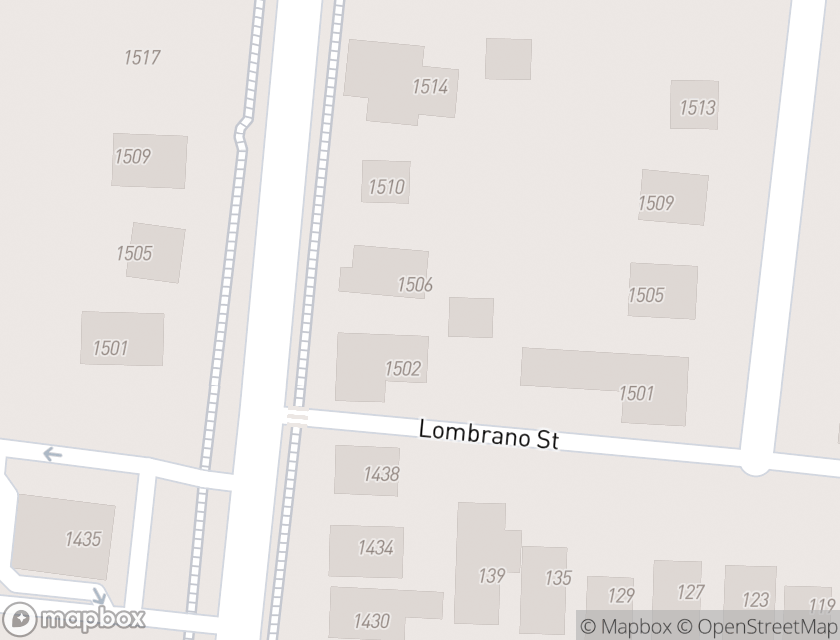
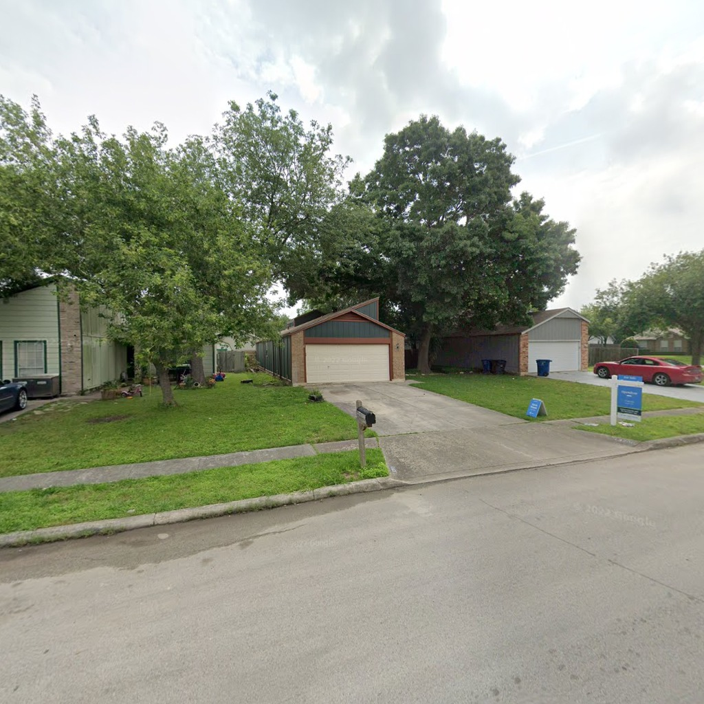
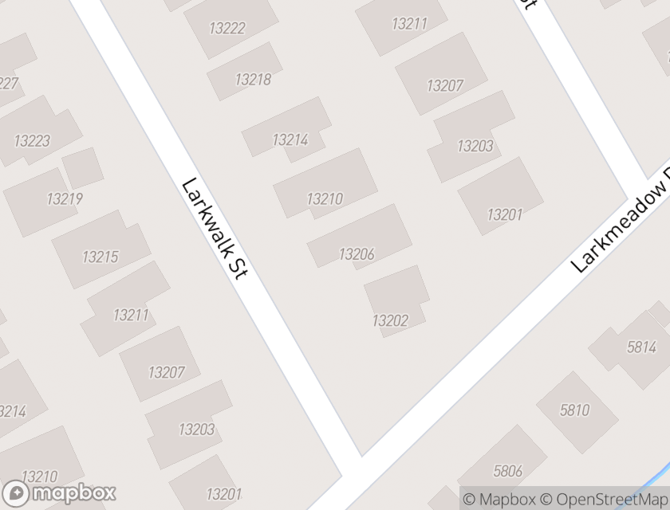

Camera 9 m from the site edge, facing 53°
Rule pick: fence, above eye, opaque, continuous, front, wood
Partly right: A wood fence is there behind the vines; its height is hard to judge.
San Antonio · L046 LIHTC · Freedom Hills Ranch Apartments · 2019-06 · high
All in image
fence, waist to eye, see-through, continuous, front, iron; fence, above eye, opaque, continuous, front, wood; vegetation, above eye, opaque, continuous, front, shrub mass, >3 m, not maintained
Camera 9 m from the site edge, facing 113°
Random: fence, above eye, opaque, continuous, side, wood
Milwaukee · M024 LIHTC · Bradley Manor Senior Apts · 2019-07 · medium
All in image
fence, above eye, opaque, continuous, side, wood; vegetation, above eye, opaque, continuous, side, row of trees, >3 m, not maintained; vegetation, above eye, opaque, continuous, side, row of trees, >3 m, not maintained; vegetation, below waist, see-through, continuous, front, lawn, >3 m, maintained

Camera 13 m from the site edge, facing 84°
Random: fence, above eye, opaque, continuous, front, wood
San Antonio · L032 LIHTC · La Posada Del Rey Apts · 2018-09 · high
All in image
fence, waist to eye, see-through, continuous, front, iron; fence, above eye, opaque, continuous, front, wood; vegetation, above eye, opaque, continuous, front, row of trees, >3 m, not maintained; vegetation, waist to eye, partly, continuous, front, shrub mass, 1-3 m, not maintained

Camera 16 m from the site edge, facing 31°
Random: fence, above eye, see-through, continuous, front, wood
San Antonio · L054 R2 · 1506 Nw 24Th St · 2013-06 · high
All in image
fence, waist to eye, opaque, continuous, front, wood; fence, above eye, see-through, continuous, front, wood

Camera 8 m from the site edge, facing 80°
Random: fence, above eye, opaque, continuous, side, wood
San Antonio · L004 R4 · 13206 Larkwalk St · 2019-05 · medium